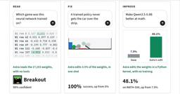

npaka
https://note.com/npaka
プログラマー。iPhone / Android / Unity / ROS / AI / AR / VR / RasPi / ロボット / ガジェット。年2冊ペースで技術書を執筆。アニソン / カラオケ / ギター / 猫 twitter : @npaka123
フィード


Businesses in ChatGPT の概要 - 企業公式AIエージェントと商品情報管理の新機能 1
1
npaka
「Businesses in ChatGPT」の概要をまとめました。続きをみる
3日前

Claudeの主要ツールまとめ - Docs・Slides・Design・Motion・Whiteboards・Sheets・Data 1
npaka
Claudeの主要ツールをまとめました。続きをみる
3日前


ModRetro Chromatic: Codex Edition の概要 - AIでゲーム作れるゲームボーイ互換機 1
npaka
「ModRetro Chromatic: Codex Edition」の概要をまとめました。続きをみる
4日前


パスワードマネージャーはどれを選ぶ？ - Appleパスワード・Googleパスワードマネージャー・1Password 2
npaka
今回は、Appleパスワード・Googleパスワードマネージャー・1Passwordの機能や使い勝手を比較します。続きをみる
5日前


Shizuku-Duplexの概要 と Full-Duplex音声対話モデルの歴史 2
npaka
「Shizuku-Duplex」の概要と「Full-Duplex」音声対話モデルの歴史についてまとめました。続きをみる
6日前



Weight-Space Programming を試す - Qwenをずんだもん口調にする 20
npaka
「Weight-Space Programming」を使って、Qwenをずんだもん口調にする実験を試したのでまとめました。続きをみる
7日前
Claude Codeのセキュリティの仕組み - Sandbox・Trust・Approvalを理解する 1
npaka
「Claude Code」のセキュリティの仕組みについてまとめました。続きをみる
7日前